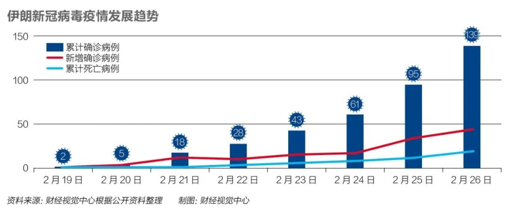

全球股市战战兢兢，世卫否定大流行病
原文链接 备份链接 世界卫生组织官员对韩国和伊朗等地爆发新冠病毒疫情表示担忧，但表示情况尚未上升到大流行病的程度。在美欧金融市场，这一模式已变得清晰：新增确诊病例数=增加的市场恐慌=疲弱的资本市场。这一模式会否必然在中国出现，尚待观察 …

虽然多数民众情绪表现稳定，但药店里口罩、酒精、消毒水已经被抢购一空。长期遭受制裁的伊朗，在医疗物资、医疗条件上确实没有办法应付疫情大规模爆发而产生的医疗需求上升。

2020年2月21日，伊朗纳杰夫国际机场，工作人员为旅客测量体温。图/法新
文 |《财经》特约作者 墨父 发自德黑兰
编辑 | 郝洲
短短几日，新冠病毒疫情在伊朗全面爆发，从首次发现确诊病例之后不到一周就成为全球疫情第四严重的国家，且致死率居全球第一，就连主要负责抗击疫情的卫生部副部长也被确诊感染。伊朗到底发生了什么？
2月19日，距离中国湖北省武汉封城后的两个“隔离期”——整整28天，伊朗首次发现两例新冠肺炎确诊病例，发现即死亡。随后几天，确诊病例成直线上升趋势，20日新增3例，21日新增13例，22日新增10例，23日新增15例，24日新增18例，25日新增34例，26日新增44例。截止当地时间2月27日，伊朗累计确诊141例，死亡22例。

伊朗的死亡病例数在除中国以外的国家里排名第一，超过了韩国（12例）和意大利（12例），而伊朗确诊病例仅为韩国的十分之一。按照死亡人数占确诊病例数的比例来看，伊朗疫情的致死率达到13.7%，远超疫情集中且严重的中国湖北省，湖北省目前的致死率约为4%。
病毒究竟如何传到伊朗，这个问题至今还是一个谜。根据已经披露的情况，伊朗的什叶派圣城库姆应是传染源和重灾区。库姆距离德黑兰大概两个小时车程，城内的库姆神学院是世界最知名的宗教学院之一，法蒂玛·马苏玛陵墓被视为伊斯兰教什叶派最为神圣的地方之一。
根据伊朗官方公布的调查，最初确诊病例在库姆发现，库姆确诊病例最多，其他确诊病例多数有库姆旅行史。伊朗卫生部部长纳马基在接受媒体采访时曾推断，“有90%以上的可能，该病毒是经由携带者从中国传入伊朗，特别是库姆市的”。但具体是谁携带进去的，是在库姆的工人、学生、商人、旅行者？没有准确答案。
纳马基表示，库姆的一例死亡病例是一位在病毒传染期曾去过中国的伊朗商人。也有可能是该伊朗商人在中国感染病毒后带回伊朗。所以，病毒是否源发中国？究竟由何种路径传入伊朗？病毒在伊朗是否发生变异才导致高致死率？这些问题至今没有准确答案。
除了致死率高，伊朗的疫情还表现得非常平等，伊朗卫生部副部长哈里齐2月25日也宣布自己确诊感染新冠肺炎，是伊朗目前确诊感染新冠病毒的最高官员按照哈里齐的说法，这个病毒“不分高低贵贱”。伊朗总统发言人拉比伊此前与哈里齐在同一个新闻发布会上共处多时。有消息说，哈里齐的确诊消息传出后，总统鲁哈尼和拉比伊都在第一时间进行了病毒检测，好在2月26日的检测结果都是阴性。此外，德黑兰第十三区的区长和国家议会的议员萨德吉也都确诊感染。
“得不得病，全看真主的意思”
疫情发生以后，伊朗10个省份的学校停课，全国体育项赛事、音乐会、艺术展等统统取消，所有电影院及公共休闲场所关停，德黑兰还禁止在公共场所举办婚礼等大型聚会，设拉子关闭了粉红清真寺等热门景点，古勒斯坦省禁止病人亲属探监，各城市的公交、地铁等公共交通也要求定期消毒。
经过一番讨论之后，伊朗已经宣布取消本周五（2月28日）的集体礼拜活动。同时，伊朗将对位于马什哈德的伊玛目礼萨圣陵和位于库姆的法蒂玛圣陵等礼拜圣地进行限流，前往礼拜的人员，必须佩戴口罩，自带洗手液，并出示健康信息。
其实做出这种决策对于政教合一的伊朗实属不易。每周五的聚礼对于穆斯林来说是生活中及其重要的一部分。此前有教士表示读《古兰经》可以抵御病毒，有教士称在圣陵朝拜可以治病，但科学家告诉伊朗政府，疫情蔓延之时大规模有着极高的风险，所以周五的礼拜取消，这对于伊朗来说是一个极其艰难的抉择。
即便如此，伊朗采取的措施与中国举全国之力严防死守的态势相比仍然较为松懈，更没有“封城”的打算。总统鲁哈尼2月26日表示，“国家没有决定隔离任何城市，民众不要听信封城的传言，所有生活物资都有足够的供应”。封城所需的资源调动能力还有国家经济的承受能力，对于伊朗都是不可承受之重。
就像大禹治水一样，不能“堵”时，只能选择“疏”。最高领袖的外事顾问也是伊朗著名的儿科医生韦拉亚提身穿白大褂出现在电视上告诉民众，“新冠病毒的致死率不如流感”。卫生部副部长哈里齐声称，“大多数感染者不必前往医院，在家休息喝水补充维生素就能好”，他在自己录制的视频里确实精神状态良好。
由于国家在给努力给疫情“降温”，民众并没有产生恐慌情绪。但这只是原因之一，还有很大一部分是宗教因素让很多民众看淡生死，一名超市的管理人员解释他自己不戴口罩的原因是“得不得病，全看真主的意思”。
笔者在当地观察到，伊朗民众在疫情不断蔓延的同时没有采取很好的保护措施，街头上戴口罩的民众也就在10%左右，拥堵的德黑兰交通也没有因为疫情而缓解，多数人还是像往常一样工作生活。更有意思的，由于学校停课，一些学生竟然组团去伊朗北部里海附近度假游玩，而那里的城市同样也有确诊病例，此事让卫生部直接喊话，“让你们停课不是让你们出去旅游的，都在宿舍老实待着”。
虽然多数民众表现得情绪稳定，但药店里的口罩、酒精、消毒水已经被抢购一空。长期遭受制裁的伊朗，在医疗物资、医疗条件上确实没有办法应付疫情大规模爆发而产生的医疗需求上升。
遭进一步孤立
伊朗的病毒是否来源于中国尚无定论，但是有很多国家的确诊病例已经确定是经由伊朗“输送”过去的。
2月20日，加拿大不列颠哥伦比亚省确诊的第6例是一名从伊朗返回的30多岁的妇女。21日，黎巴嫩发现的第1例病例系一名从库姆回国的45岁黎巴嫩妇女。22日，阿联酋再添两名确诊病例，为一名70岁的伊朗游客和他64岁的妻子。笔者自己统计了一下各国发现的伊朗输送确诊病例人数，科威特43人，黎巴嫩2人，伊拉克4人，巴林26人，阿曼2人，阿联酋2人，巴基斯坦1人，加拿大1人，还有一名中国人从伊朗返回中国后被确诊。
当伊朗成为中东“毒源”以后，各国都紧急关闭了与伊朗的空中、陆地交通，除上述发现了来自伊朗确诊病例的国家外，土耳其、塔吉克斯坦等也切断与伊朗的联系，伊朗几乎成为一座孤岛。依然滞留在伊朗的中国人惊恐地发现，此前因为中国疫情伊朗与中国间的直航都已取消，而之前通过迪拜、莫斯科、伊斯坦布尔等城市转机的回国路径也已经被堵死，几无退路。

▲点击图片查看更多疫情报道
责编 | 黄端 duanhuang@caijing.com.cn
本文为《财经》杂志原创文章，未经授权不得转载或建立镜像。如需转载，请在文末留言申请并获取授权。
原文链接 备份链接 世界卫生组织官员对韩国和伊朗等地爆发新冠病毒疫情表示担忧，但表示情况尚未上升到大流行病的程度。在美欧金融市场，这一模式已变得清晰：新增确诊病例数=增加的市场恐慌=疲弱的资本市场。这一模式会否必然在中国出现，尚待观察 …
原文链接 备份链接 图片来源：阿纳多卢通讯社 “ 鲁哈尼强调，国家对疫情高度警惕，但不会封闭任何地区或城市，只会根据情况采取限制性措施。 ” 随着伊朗国内新冠肺炎确诊人数持续上升，该国政坛高层也受到病毒“入侵”。 2月27日，伊朗伊斯兰共 …
原文链接 备份链接 目前包括中国大陆在内，全球已经有41个国家和地区出现了疫情，其中，韩国是中国大陆之外疫情蔓延最快的国家。 尽管如此，世卫组织不希望在“没有谨慎和清晰地分析事实情况之前”仓促宣布疫情为全球“大流行病” 文 |《财经》特派 …
原文链接 备份链接 目前，伊朗是中东地区确诊病例最多的国家。截至27日，伊朗共确诊245例新冠病毒感染病例，其中26例死亡，25例治愈出院。 全文3274字，阅读约需6.5分钟 截至27日，全球除南极洲外的六大洲都出现了新冠病毒感染病 …
原文链接 备份链接 “伊朗应对地震很有一套， 但是传染病防控，他们实在没经验” 视频截图：哈利其（图左）在发布会上不停擦汗。 当地时间2月25日，伊朗卫生部发言人、副部长哈利其（Iraj Harirchi）新冠病毒检测呈阳性。稍晚些时候， …